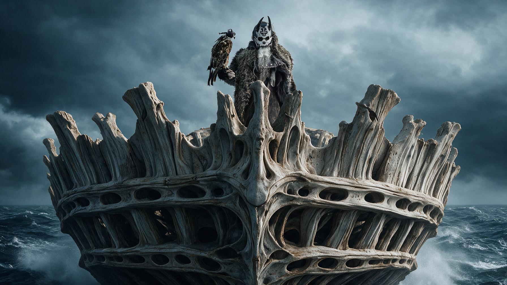

The circle
Members
7 people, 7 rays. Read a bio, find a collaborator, then say hello in the Discord.

Mara Voss
@artist1 · 33° · Reykjavík
Writer and occasional bookbinder. I work in long-form fiction and the small, stubborn object. I keep the Order’s calendar because someone has to, and because I like a room with a shape. Currently: a novel about a family that inherits a lighthouse and refuses to sell it.

Ivo Halden
@artist2 · 21° · Glasgow
Painter, mostly in oils, mostly too large for the studio. I am interested in weather as a subject and as a method. Happy to talk about grounds, varnish, and why the best colour is usually the one already on the palette.

Sena Okafor
@artist3 · 14° · Lagos / London
Composer and sound designer. I build rooms out of recorded objects — doors, water, breath — and then invite melody in. Looking for a filmmaker and a choreographer for a short piece about migration and tide.

Rook
@artist4 · 8° · Tromsø
Furniture, tools, and repairs. I work with reclaimed timber and whatever the coast gives up. My workshop is open on Sundays to anyone in the Order who wants to learn a joint or fix a chair.

Lio Ash
@artist5 · 26° · Lisbon
Documentary photographer. Long projects, slow edits, small prints. The sea keeps appearing whether I plan it or not. I run the monthly photo walk and will absolutely make you look at a contact sheet.

Nadia Frey
@artist6 · 11° · Berlin
Performance artist and reluctant administrator. I make work about endurance, repetition, and the audience’s willingness to stay. The ice is a useful collaborator: it does not negotiate.
alex
@alex · 1°